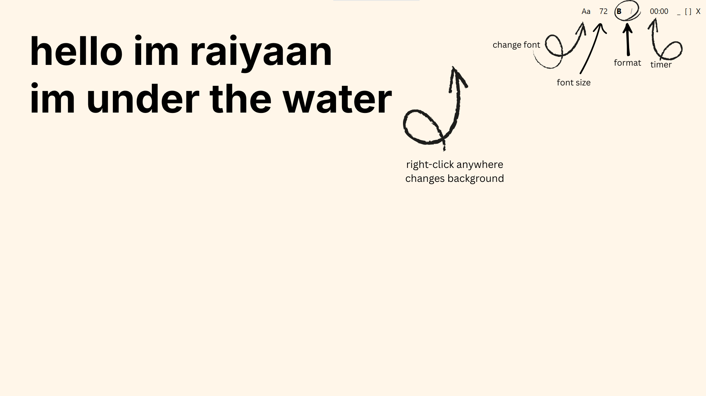

thinkmine
a place to think without distractions.
download for windows
version 1.0.0 • free • 56mb
windows will show a security warning because the app isn't signed. just click "more info" then "run anyway" — it's safe, promise :)
why i built this
i wanted a place to write without notifications, formatting menus, or any other bullshit that pulls you out of flow.
thinkmine is just a blank canvas. you write. it saves. that's it.
features
pretty much nothing...thats the best part :p
insp. by farza
check him out and his version 'freewrite' for mac